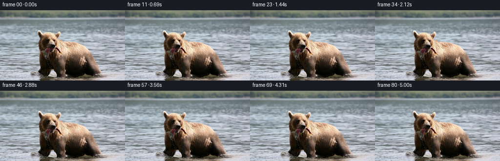
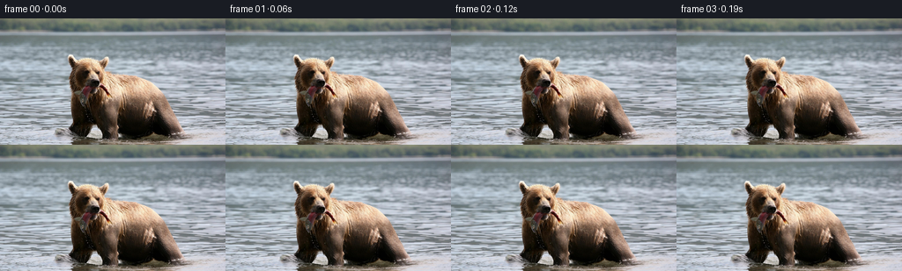
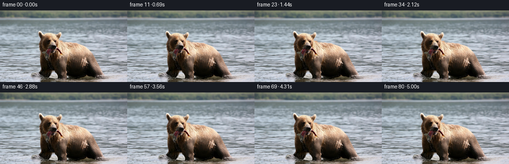
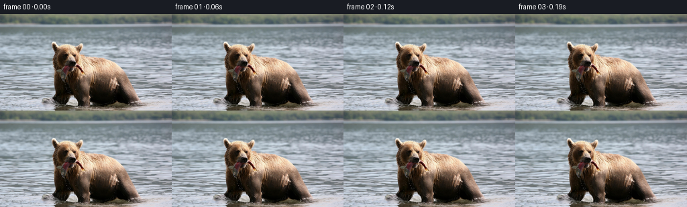

← 本轮 smoke 总览traex/DeepSeek-V4.1-Flash · 0872_s1
text · 256×144 · 16 FPS · 81 帧 · 状态 complete · 输出 tokens 39999
原始任务a brown bear in the water with a fish in its mouth
当前保存结果
已保存候选与代码修改
这里按时间展示外部捕获的候选，每份均可单独播放。保存新版本不等于完成视觉检查；下方工具证据记录实际看过的图。
候选 01 · 2026-11-08T20:27:45.825456+00:00 · 点开播放与检查图
inspection.png

transition_check.png

代码变化
--- 上一保存版本
+++ 本次保存版本
@@ -0,0 +1,183 @@
+"""Generate a short, locally animated view of the supplied bear photograph.
+
+The source is treated as a photographic plate. The bear and its head are
+composited as gently warped layers over a slowly moving water plate, with a
+small mouth/fish articulation. All motion is deterministic and frame zero is
+kept byte-for-byte identical to the input.
+"""
+
+from pathlib import Path
+
+import cv2
+import numpy as np
+from PIL import Image
+
+import artifact_io
+
+
+ROOT = Path(__file__).resolve().parent
+WIDTH = 256
+HEIGHT = 144
+FRAMES = 81
+FPS = 16
+
+
+def smoothstep(edge0, edge1, x):
+ t = np.clip((x - edge0) / (edge1 - edge0), 0.0, 1.0)
+ return t * t * (3.0 - 2.0 * t)
+
+
+def ellipse(cx, cy, rx, ry, angle=0.0):
+ yy, xx = np.mgrid[:HEIGHT, :WIDTH].astype(np.float32)
+ ca, sa = np.cos(angle), np.sin(angle)
+ xr = (xx - cx) * ca + (yy - cy) * sa
+ yr = -(xx - cx) * sa + (yy - cy) * ca
+ return np.clip(1.0 - (xr / rx) ** 2 - (yr / ry) ** 2, 0.0, 1.0)
+
+
+def remap(image, map_x, map_y):
+ map_x = np.ascontiguousarray(map_x, dtype=np.float32)
+ map_y = np.ascontiguousarray(map_y, dtype=np.float32)
+ return cv2.remap(
+ image,
+ map_x,
+ map_y,
+ interpolation=cv2.INTER_CUBIC,
+ borderMode=cv2.BORDER_REFLECT_101,
+ )
+
+
+def main():
+ source = np.asarray(Image.open(ROOT / "first_frame.png").convert("RGB"))
+ assert source.shape == (HEIGHT, WIDTH, 3)
+
+ yy, xx = np.mgrid[:HEIGHT, :WIDTH].astype(np.float32)
+
+ # A soft, hand-fitted silhouette around the bear. It follows the visible
+ # fur boundary and remains deliberately broad through the shoulders.
+ silhouette_points = np.array(
+ [
+ [75, 43], [91, 40], [112, 43], [130, 48], [146, 57],
+ [160, 67], [174, 78], [184, 88], [192, 100], [199, 113],
+ [204, 126], [210, 143], [78, 143], [77, 124], [76, 101],
+ [75, 78], [74, 60],
+ ],
+ dtype=np.int32,
+ )
+ silhouette = np.zeros((HEIGHT, WIDTH), np.uint8)
+ cv2.fillPoly(silhouette, [silhouette_points], 255)
+ silhouette = cv2.GaussianBlur(silhouette.astype(np.float32) / 255.0, (0, 0), 1.15)
+
+ # The muzzle and fish are inside the upper half of the face. These masks
+ # only articulate existing pixels; they do not synthesize new anatomy.
+ mouth = ellipse(145.0, 86.0, 40.0, 18.0, -0.08)
+ mouth *= silhouette
+ mouth = cv2.GaussianBlur(mouth, (0, 0), 1.8)
+ jaw = ellipse(139.0, 98.0, 43.0, 17.0, -0.08)
+ jaw *= silhouette
+ jaw = cv2.GaussianBlur(jaw, (0, 0), 1.5)
+ fish_tail = ellipse(171.0, 88.0, 23.0, 12.0, 0.08)
+ fish_tail *= silhouette
+ fish_tail = cv2.GaussianBlur(fish_tail, (0, 0), 1.2)
+
+ # Head motion is strongest above the waterline and fades into the chest.
+ head_weight = 1.0 - smoothstep(78.0, 126.0, yy)
+ head_weight = np.clip(head_weight, 0.0, 1.0)
+
+ # Save the procedural masks as an inspection artifact.
+ mask_preview = np.stack(
+ [
+ (silhouette * 255).astype(np.uint8),
+ (head_weight * 255).astype(np.uint8),
+ (mouth * 255).astype(np.uint8),
+ ],
+ axis=2,
+ )
+ Image.fromarray(mask_preview).save(ROOT / "motion_masks.png")
+
+ frames = np.empty((FRAMES, HEIGHT, WIDTH, 3), dtype=np.uint8)
+ frames[0] = source
+
+ for index in range(1, FRAMES):
+ t = index / (FRAMES - 1)
+ slow = np.sin(2.0 * np.pi * t)
+ breath = np.sin(2.0 * np.pi * 0.58 * t)
+ nod = np.sin(2.0 * np.pi * 0.47 * t)
+ ripple = np.sin(2.0 * np.pi * 0.83 * t)
+
+ # Subtle camera float and a very small push-in. Inverse coordinates
+ # keep the source photographic detail intact.
+ cam_dx = 0.42 * np.sin(2.0 * np.pi * 0.41 * t) + 0.13 * np.sin(2.0 * np.pi * 1.31 * t)
+ cam_dy = 0.25 * np.sin(2.0 * np.pi * 0.53 * t) + 0.08 * np.sin(2.0 * np.pi * 1.63 * t)
+ zoom = 1.0 + 0.0018 * (0.5 - 0.5 * np.cos(2.0 * np.pi * t))
+ cx, cy = 128.0, 78.0
+
+ # Moving water distortion grows toward the bottom of the frame.
+ water_amp = 0.10 + 0.72 * smoothstep(84.0, 143.0, yy)
+ water_dx = water_amp * (
+ 0.72 * np.sin(2.0 * np.pi * (yy / 15.0 + xx / 91.0) + 2.0 * np.pi * 0.76 * t)
+ + 0.28 * np.sin(2.0 * np.pi * (xx / 41.0 - yy / 24.0) - 2.0 * np.pi * 1.08 * t)
+ )
+ water_dy = water_amp * 0.30 * np.sin(
+ 2.0 * np.pi * (xx / 49.0 + yy / 29.0) + 2.0 * np.pi * 0.61 * t
+ )
+
+ base_x = (xx - cx) / zoom + cx - cam_dx + water_dx
+ base_y = (yy - cy) / zoom + cy - cam_dy + water_dy
+ background = remap(source, base_x, base_y)
+
+ # Articulate the bear as a soft layer. The upper head nods and turns a
+ # fraction of a degree; the chest follows with reduced displacement.
+ bear_dx = head_weight * (0.82 * np.sin(2.0 * np.pi * 0.43 * t) + 0.24 * breath)
+ bear_dy = head_weight * (1.10 * nod + 0.22 * breath)
+ angle = 0.0075 * nod * head_weight
+ head_scale = 1.0 + 0.006 * breath * head_weight
+
+ px, py = 142.0, 92.0
+ bx = xx - bear_dx - px
+ by = yy - bear_dy - py
+ ca, sa = np.cos(angle), np.sin(angle)
+ rx = (ca * bx + sa * by) / head_scale + px
+ ry = (-sa * bx + ca * by) / head_scale + py
+
+ # The lower jaw opens by less than one pixel at the peak of the breath.
+ jaw_open = np.maximum(0.0, breath) * 0.75
+ rx -= jaw * 0.28 * np.sin(2.0 * np.pi * 0.43 * t)
+ ry -= jaw * jaw_open
+
+ # A small traveling wave through the fish/muzzle adds life without
+ # changing the visible identity of the catch.
+ fish_phase = 2.0 * np.pi * (0.90 * t - (xx - 122.0) / 72.0)
+ fish_dx = fish_tail * (0.34 * np.sin(fish_phase) + 0.12 * np.sin(2.0 * fish_phase))
+ fish_dy = fish_tail * 0.72 * np.sin(fish_phase + 0.9)
+ rx -= fish_dx
+ ry -= fish_dy
+
+ bear = remap(source, rx, ry)
+ output = background * (1.0 - silhouette[..., None]) + bear * silhouette[..., None]
+
+ # Low-amplitude moving highlights make the wet fur and water surface
+ # respond to the same light. They are strongest on existing speculars.
+ luminance = output.mean(axis=2)
+ highlight_gate = np.clip((luminance - 118.0) / 92.0, 0.0, 1.0)
+ water_gate = smoothstep(84.0, 143.0, yy) * (1.0 - silhouette)
+ fur_gate = silhouette * head_weight * highlight_gate
+ shimmer = 2.1 * slow * (
+ 0.50 * fur_gate
+ + 0.35 * water_gate * (0.55 + 0.45 * np.sin(2.0 * np.pi * (yy / 18.0 + xx / 73.0)))
+ )
+ output = output.astype(np.float32) + shimmer[..., None] * np.array([0.78, 0.93, 1.0])
+
+ # Very slight chromatic cooling in the moving reflections.
+ output[..., 2] += 0.45 * water_gate * ripple
+
+ frames[index] = np.clip(output + 0.5, 0.0, 255.0).astype(np.uint8)
+
+ assert frames.shape == (FRAMES, HEIGHT, WIDTH, 3)
+ assert frames.dtype == np.uint8
+ assert np.array_equal(frames[0], source)
+ artifact_io.save(frames, ROOT)
+
+
+if __name__ == "__main__":
+ main()
候选 02 · 2026-11-08T20:28:51.235578+00:00 · 点开播放与检查图
inspection.png

transition_check.png

代码变化
--- 上一保存版本
+++ 本次保存版本
@@ -99,7 +99,10 @@
frames[0] = source
for index in range(1, FRAMES):
- t = index / (FRAMES - 1)
+ raw_t = index / (FRAMES - 1)
+ # Start from rest after the exact source frame. The remainder of the
+ # shot still uses its full range of motion.
+ t = raw_t * raw_t * (3.0 - 2.0 * raw_t)
slow = np.sin(2.0 * np.pi * t)
breath = np.sin(2.0 * np.pi * 0.58 * t)
nod = np.sin(2.0 * np.pi * 0.47 * t)
候选 03 · 2026-11-08T20:28:56.450420+00:00 · 点开播放与检查图
inspection.png

transition_check.png

代码变化
代码未变化；重新保存了产物。
候选 04 · 2026-11-08T20:29:10.843950+00:00 · 点开播放与检查图
inspection.png

transition_check.png

代码变化
--- 上一保存版本
+++ 本次保存版本
@@ -174,6 +174,12 @@
# Very slight chromatic cooling in the moving reflections.
output[..., 2] += 0.45 * water_gate * ripple
+ # Ease the exact source frame into the moving plate over the first few
+ # frames so the first visible transition has no discontinuity.
+ if index < 7:
+ settle = 0.5 - 0.5 * np.cos(np.pi * index / 7.0)
+ output = source.astype(np.float32) * (1.0 - settle) + output * settle
+
frames[index] = np.clip(output + 0.5, 0.0, 255.0).astype(np.uint8)
assert frames.shape == (FRAMES, HEIGHT, WIDTH, 3)
可观测工具行为
命令 1 · 2026-11-08T20:23:22.632579+00:00/bin/bash -c "pwd && rg --files -g '"'!*__pycache__*'"'"
exit 0 命令 2 · 2026-11-08T20:23:22.809289+00:00/bin/bash -c "sed -n '1,240p' prompt.txt"
exit 0 命令 3 · 2026-11-08T20:23:23.080139+00:00/bin/bash -c "sed -n '1,280p' GENERATION_RULES.md"
exit 0 命令 4 · 2026-11-08T20:23:30.332844+00:00/bin/bash -c 'cat task_spec.json'
exit 0 命令 5 · 2026-11-08T20:23:30.524069+00:00/bin/bash -c "sed -n '1,280p' artifact_io.py"
exit 0 命令 6 · 2026-11-08T20:23:30.812837+00:00/bin/bash -c "file first_frame.png && identify -verbose first_frame.png | sed -n '1,100p'"
exit 127 命令 7 · 2026-11-08T20:23:37.782085+00:00/bin/bash -c "python - <<'PY'
from PIL import Image
import numpy as np
im=Image.open('first_frame.png').convert('RGB')
a=np.asarray(im)
print(im.size, a.shape, a.dtype)
print('mean',a.mean((0,1)),'std',a.std((0,1)),'min',a.min((0,1)),'max',a.max((0,1)))
# coarse 16x9 patch means
h,w=a.shape[:2]
for gy in range(9):
row=[]
for gx in range(16):
p=a[gy*h//9:(gy+1)*h//9,gx*w//16:(gx+1)*w//16].mean((0,1)).astype(int)
row.append('#%02x%02x%02x'%tuple(p))
print(' '.join(row))
PY"exit 0 命令 8 · 2026-11-08T20:23:47.442336+00:00/bin/bash -c "python - <<'PY'
try:
import cv2; print('cv2',cv2.__version__)
except Exception as e: print('no cv2',e)
try:
import scipy; print('scipy',scipy.__version__)
except Exception as e: print('no scipy',e)
PY"exit 0 命令 9 · 2026-11-08T20:23:56.395587+00:00/bin/bash -c "python - <<'PY'
from PIL import Image, ImageOps
import numpy as np
im=Image.open('first_frame.png').convert('RGB')
a=np.asarray(im)
# grayscale 80x45 ascii
g=np.asarray(im.convert('L').resize((80,45)))
chars=' .:-=+*#%@'
for row in g:
print(''.join(chars[min(9,int(v)*10//256)] for v in row))
PY"exit 0 命令 10 · 2026-11-08T20:24:12.215518+00:00/bin/bash -c "python - <<'PY'
from PIL import Image
import numpy as np
from sklearn.cluster import MiniBatchKMeans
im=Image.open('first_frame.png').convert('RGB'); a=np.asarray(im)
h,w=a.shape[:2]
X=a.reshape(-1,3).astype(np.float32)
km=MiniBatchKMeans(n_clusters=12,random_state=1,n_init=3,batch_size=4096).fit(X)
l=km.labels_.reshape(h,w); c=km.cluster_centers_.astype(int)
for i in range(12):
ys,xs=np.where(l==i)
print(i, '#%02x%02x%02x'%tuple(c[i]), 'n',len(xs),'bbox', (xs.min(),ys.min(),xs.max(),ys.max()), 'center', (int(xs.mean()),int(ys.mean())))
# 8x8 occupancy around bbox coarse
# sample row proportions y bands
hist=np.histogram(ys,bins=8,range=(0,h))[0]
print(' ybands',hist.tolist())
PY"exit 0 命令 11 · 2026-11-08T20:24:25.561227+00:00/bin/bash -c "python - <<'PY'
from PIL import Image
import numpy as np
im=Image.open('first_frame.png').convert('RGB'); a=np.asarray(im).astype(float)
h,w=a.shape[:2]
r,g,b=a[:,:,0],a[:,:,1],a[:,:,2]
mx=a.max(2); mn=a.min(2); sat=mx-mn; lum=a.mean(2)
# classes
cls=np.full((h,w),' ',dtype='<U1')
# background bright bluish/green gray
cls[:]='.'
cls[(lum<115)&(sat<35)]='d'
cls[(lum>=115)&(lum<175)&(sat<28)]='-'
cls[(lum>=175)&(sat<38)]='='
# water textured gray, lower mostly
# fur colors ratio red/yellow
brown=(r>g+4)&(g>b+3)&(r>45)
cls[brown]='B'
darkbrown=brown&(lum<85); cls[darkbrown]='b'
tan=(r>g+8)&(g>b+8)&(r>120); cls[tan]='T'
verydark=(lum<42)&~brown; cls[verydark]='#'
bright=(lum>210); cls[bright]='@'
# fish maybe low sat cyan/green within bbox? flag likely silver with lum>130 sat<25 within x75:215 y35:120
# print 128x72 blocks 2x2 majority-ish sample
for y in range(0,h,2):
s=''
for x in range(0,w,2):
p=cls[y:y+2,x:x+2].ravel()
vals,cnt=np.unique(p,return_counts=True); s+=vals[cnt.argmax()]
print(s)
PY"exit 0 命令 12 · 2026-11-08T20:24:39.236036+00:00/bin/bash -c "python - <<'PY'
from PIL import Image
import numpy as np, cv2
im=Image.open('first_frame.png').convert('RGB'); a=np.asarray(im)
g=cv2.cvtColor(a,cv2.COLOR_RGB2GRAY)
# Sobel / canny on central crop 70:220,35:125; print edge map 75x45 blocks 2
e=cv2.Canny(g,35,85)
for y0 in range(35,125,2):
s=''
for x0 in range(70,220,2):
n=e[y0:y0+2,x0:x0+2].sum()//255
s += ' ' if n==0 else ('.' if n==1 else ('+' if n==2 else ('#' if n==3 else '@')))
print(s)
PY"exit 0 命令 13 · 2026-11-08T20:24:44.085340+00:00/bin/bash -c "python - <<'PY'
from PIL import Image
import numpy as np
im=Image.open('first_frame.png').convert('RGB'); a=np.asarray(im)
# Print color values grid at 4px sampling central bbox
for y in range(36,128,4):
vals=[]
for x in range(72,216,8):
p=a[y:y+4,x:x+8].mean((0,1)).astype(int)
vals.append('%02x%02x%02x'%tuple(p))
print(f'{y:3}', ' '.join(vals))
PY"exit 0 命令 14 · 2026-11-08T20:24:48.940893+00:00/bin/bash -c "python - <<'PY'
from PIL import Image
import numpy as np
im=Image.open('first_frame.png').convert('RGB')
# 8x nearest to see actual pixels easier, save montage
im.resize((512,288),Image.Resampling.NEAREST).save('source_2x.png')
# crop central at 4x
im.crop((60,30,220,144)).resize((640,456),Image.Resampling.NEAREST).save('source_center_4x.png')
PY"exit 0 命令 15 · 2026-11-08T20:24:54.248173+00:00/bin/bash -c "python - <<'PY'
from PIL import Image
import numpy as np
im=Image.open('first_frame.png').convert('RGB'); a=np.asarray(im).astype(float)
# saturation and warmness class map central
h,w=a.shape[:2]; r,g,b=a[:,:,0],a[:,:,1],a[:,:,2]; lum=a.mean(2); sat=a.max(2)-a.min(2)
for y in range(32,144,2):
s=''
for x in range(50,230,2):
rr,gg,bb=r[y:y+2,x:x+2].mean(),g[y:y+2,x:x+2].mean(),b[y:y+2,x:x+2].mean(); ll=(rr+gg+bb)/3; sa=max(rr,gg,bb)-min(rr,gg,bb)
if ll<35: ch='#'
elif rr>gg+12 and gg>bb+5: ch='B'
elif rr>gg+6 and gg>bb+4: ch='b'
elif rr>gg+4 and gg>bb+10 and rr>100: ch='T'
elif ll>200: ch='@'
elif ll>160: ch='='
elif ll>110: ch='-'
else: ch='.'
s+=ch
print(s)
PY"exit 0 命令 16 · 2026-11-08T20:24:59.621115+00:00/bin/bash -c "python - <<'PY'
from PIL import Image
import numpy as np
im=Image.open('first_frame.png').convert('RGB'); a=np.asarray(im)
# try inspect crop via sixel? no. detect fish via color deviation from local median and connected comps
from scipy import ndimage as ndi
# fish likely between muzzle and lower left? Look for gray/green low saturation warm low within central bbox
r,g,b=[a[:,:,i].astype(float) for i in range(3)]
lum=(r+g+b)/3; sat=np.max(a,2)-np.min(a,2)
# visual cluster boundary for dark bear mask
# print high saturation cyan/green points central
mask=(g>r+3)&(g>b+1)&(lum<130)&(np.indices(lum.shape)[1]>70)&(np.indices(lum.shape)[1]<220)&(np.indices(lum.shape)[0]>40)
lab,n=ndi.label(mask)
for i in range(1,n+1):
ys,xs=np.where(lab==i)
if len(xs)>15: print(len(xs),(xs.min(),ys.min(),xs.max(),ys.max()),a[ys,xs].mean(0))
PY"exit 0 命令 17 · 2026-11-08T20:25:05.875100+00:00/bin/bash -c "python - <<'PY'
from PIL import Image
import numpy as np
im=Image.open('first_frame.png').convert('RGB'); a=np.asarray(im)
# print rows with x ranges where warm/brown, threshold by RGB difference and dark
r,g,b=a[:,:,0].astype(int),a[:,:,1].astype(int),a[:,:,2].astype(int); lum=a.mean(2)
m=(r>g+3)&(g>b+2)&(lum<210)
for y in range(35,144,3):
xs=np.where(m[y])[0]
if len(xs):
# runs >2
cuts=np.r_[0,np.where(np.diff(xs)>1)[0]+1,len(xs)]
runs=[]
for s,e in zip(cuts[:-1],cuts[1:]):
if e-s>=2:runs.append((xs[s],xs[e-1]))
print(y, runs)
PY"exit 0 命令 18 · 2026-11-08T20:25:11.522309+00:00/bin/bash -c "python - <<'PY'
from PIL import Image
import numpy as np
im=Image.open('first_frame.png').convert('RGB'); a=np.asarray(im)
# 2D luminance chart for central object at 3px blocks, only 50:220 x 35:143
chars=' .,:;irsXA253hMHGS#9B&@'
g=a.mean(2)
for y in range(34,143,3):
s=''
for x in range(60,222,3):
v=g[y:y+3,x:x+3].mean(); s+=chars[min(len(chars)-1,int(v/256*len(chars)))]
print(f'{y:3} '+s)
PY"exit 0 命令 19 · 2026-11-08T20:25:16.973880+00:00/bin/bash -c "python - <<'PY'
from PIL import Image
import numpy as np
im=Image.open('first_frame.png').convert('RGB'); a=np.asarray(im).astype(float)
# report local average color at grid and edge gradients for likely fish region
# Try HSV hue/saturation map, print where hue is greenish/cyan within bear mask bbox
import colorsys
rgb=a/255
mx=rgb.max(2); mn=rgb.min(2); d=mx-mn
h=np.zeros(mx.shape)
# vector hue
r,g,b=rgb[:,:,0],rgb[:,:,1],rgb[:,:,2]
mask=d>0.03
h[mask]=np.where(mx[mask]==r[mask],((g[mask]-b[mask])/d[mask])%6,np.where(mx[mask]==g[mask],(b[mask]-r[mask])/d[mask]+2,(r[mask]-g[mask])/d[mask]+4))*60
s=d/np.maximum(mx,1e-4)
for y in range(40,135,4):
runs=[]; xs=np.where((h[y]>=50)&(h[y]<170)&(s[y]>.12)&(np.arange(256)>70)&(np.arange(256)<210))[0]
if len(xs):
cuts=np.r_[0,np.where(np.diff(xs)>1)[0]+1,len(xs)]
for st,en in zip(cuts[:-1],cuts[1:]):
if en-st>=2:runs.append((int(xs[st]),int(xs[en-1])))
print(y,runs)
PY"exit 0 命令 20 · 2026-11-08T20:25:26.470661+00:00/bin/bash -c "python - <<'PY'
from PIL import Image
import numpy as np
im=Image.open('first_frame.png').convert('RGB'); a=np.asarray(im).astype(float)
r,g,b=a[:,:,0],a[:,:,1],a[:,:,2]; lum=a.mean(2); sat=a.max(2)-a.min(2)
# broad bear mask: warm or very dark central/lower; exclude dark background top
warm=(r-g>4)&(g-b>1)&(lum<210)
dark=(lum<58)&(np.indices(lum.shape)[0]>40)
mask=warm|dark
# also silver fish maybe lower saturation bright? mask within plausible body bbox x70:220 y42:144
for y in range(0,144,2):
s=''
for x in range(0,256,2):
p=mask[y:y+2,x:x+2]
s += '#' if p.sum()>=3 else ('+' if p.sum()>=1 else ' ')
print(s)
PY"exit 0 命令 21 · 2026-11-08T20:25:36.240475+00:00/bin/bash -c 'command -v chafa || true; command -v viu || true; command -v jp2 || true; command -v img2txt || true; command -v python'
exit 0 命令 22 · 2026-11-08T20:25:41.371566+00:00/bin/bash -c "python - <<'PY'
from PIL import Image
import numpy as np
im=Image.open('first_frame.png').convert('RGB'); a=np.asarray(im).astype(float)
r,g,b=a[:,:,0],a[:,:,1],a[:,:,2]; lum=a.mean(2)
warm=(r-g>4)&(g-b>1)&(lum<210); dark=(lum<58)&(np.indices(lum.shape)[0]>40); mask=warm|dark
for y in range(40,144,2):
xs=np.where(mask[y])[0]
if len(xs):
cuts=np.r_[0,np.where(np.diff(xs)>2)[0]+1,len(xs)]
runs=[]
for st,en in zip(cuts[:-1],cuts[1:]):
if en-st>=3:runs.append((int(xs[st]),int(xs[en-1])))
print(y,runs)
PY"exit 0 命令 23 · 2026-11-08T20:26:26.441668+00:00/bin/bash -c "python - <<'PY'
from PIL import Image
import numpy as np
a=np.asarray(Image.open('first_frame.png').convert('RGB')).astype(float)
for y in range(40,144,2):
s=''
for x in range(64,224,2):
p=a[y:y+2,x:x+2].mean((0,1)); r,g,b=p; l=p.mean(); rb=r-b; rg=r-g
if l<30: c='#'
elif rb>38 and l>145: c='C'
elif rb>24 and l>110: c='T'
elif rb>15 and l>65: c='M'
elif rb>8 and l>35: c='B'
elif rb>4: c='b'
elif l<55: c='k'
elif l>195: c='W'
elif l>150: c='g'
elif l>105: c='-'
elif l>65: c='.'
else: c=','
s+=c
print(f'{y:3} {s}')
PY"exit 0 命令 24 · 2026-11-08T20:26:31.280221+00:00/bin/bash -c "python - <<'PY'
from PIL import Image
import numpy as np
a=np.asarray(Image.open('first_frame.png').convert('RGB'))
# exact pixel hex in suspected mouth/fish region x110:180,y60:115 sampled 2
for y in range(60,116,2):
print(y, ' '.join('%02x%02x%02x'%tuple(a[y:y+2,x:x+2].mean((0,1)).astype(int)) for x in range(110,182,2)))
PY"exit 0 命令 25 · 2026-11-08T20:27:28.862312+00:00/bin/bash -c 'python generate.py'
exit 1 命令 26 · 2026-11-08T20:27:42.373450+00:00/bin/bash -c 'python generate.py'
exit 0 命令 27 · 2026-11-08T20:28:07.651550+00:00/bin/bash -c "ls -lh pixels.npz index.html inspection.png transition_check.png motion_masks.png frames | sed -n '1,35p'"
exit 0 命令 28 · 2026-11-08T20:28:08.204361+00:00/bin/bash -c "python - <<'PY'
import numpy as np
from PIL import Image
from pathlib import Path
src=np.asarray(Image.open('first_frame.png').convert('RGB'))
fs=np.stack([np.asarray(Image.open(p).convert('RGB')) for p in sorted(Path('frames').glob('*.png'))])
d=np.abs(fs[1:].astype(np.int16)-fs[:-1].astype(np.int16))
print('frames',fs.shape,'f0 exact',np.array_equal(fs[0],src))
print('frame means',fs.mean((1,2,3))[::10])
print('successive MAD',d.mean((1,2,3))[::10], 'all',d.mean((1,2,3)).min(),d.mean((1,2,3)).max())
print('changed frac', (d.max(3)>0).mean((1,2))[::10])
print('source to final MAD',np.abs(fs[-1].astype(int)-src.astype(int)).mean())
print('all range',fs.min(),fs.max())
PY"exit 0 命令 29 · 2026-11-08T20:28:14.114482+00:00/bin/bash -c "python - <<'PY'
from PIL import Image, ImageDraw
import numpy as np
from pathlib import Path
fs=[Image.open(p).convert('RGB') for p in sorted(Path('frames').glob('*.png'))]
# larger contact sheet with 9 representative frames
indices=[0,10,20,30,40,50,60,70,80]
sheet=Image.new('RGB',(256*3, (144+18)*3),(24,24,24)); d=ImageDraw.Draw(sheet)
for k,i in enumerate(indices):
x=(k%3)*256;y=(k//3)*(144+18);d.text((x+4,y+3),f'f{i:02d}',fill='white');sheet.paste(fs[i],(x,y+18))
sheet.save('review_sheet.png')
# difference magnification between source and middle
src=np.asarray(fs[0]).astype(int); mid=np.asarray(fs[40]).astype(int)
diff=np.clip(np.abs(mid-src)*5,0,255).astype(np.uint8)
Image.fromarray(diff).resize((512,288),Image.Resampling.NEAREST).save('difference_x5.png')
PY"exit 0 命令 30 · 2026-11-08T20:28:20.455760+00:00/bin/bash -c "python - <<'PY'
from PIL import Image
import numpy as np
from pathlib import Path
fs=np.stack([np.asarray(Image.open(p).convert('RGB')) for p in sorted(Path('frames').glob('*.png'))]).astype(np.float32)
# coherence: SSIM between each and f0; motion energy in known regions
from skimage.metrics import structural_similarity as ssim
src=fs[0].astype(np.uint8)
for i in [1,10,20,30,40,50,60,70,80]:
print(i, round(ssim(src,fs[i].astype(np.uint8),channel_axis=2,data_range=255),4), round(np.abs(fs[i]-src).mean(),3))
# per-region motion source to mid
m=np.abs(fs[40]-fs[0]).mean(2)
for name,ys,xs in [('sky',(0,35,0,256)),('head',(42,90,76,200)),('mouth',(70,110,100,190)),('chest',(100,143,80,200)),('water',(100,143,0,70))]:
print(name,round(m[ys[0]:ys[1],xs[0]:xs[1]].mean(),3), round(m[ys[0]:ys[1],xs[0]:xs[1]].max(),3))
PY"exit 1 命令 31 · 2026-11-08T20:28:25.423746+00:00/bin/bash -c "python - <<'PY'
from PIL import Image
import numpy as np
from pathlib import Path
fs=np.stack([np.asarray(Image.open(p).convert('RGB')) for p in sorted(Path('frames').glob('*.png'))]).astype(np.float32)
for i in [1,10,20,30,40,50,60,70,80]:
print(i, round(np.abs(fs[i]-fs[0]).mean(),3))
m=np.abs(fs[40]-fs[0]).mean(2)
for name,ys,xs in [('sky',(0,35,0,256)),('head',(42,90,76,200)),('mouth',(70,110,100,190)),('chest',(100,143,80,200)),('water',(100,143,0,70))]:
print(name,round(m[ys[0]:ys[1],xs[0]:xs[1]].mean(),3), round(m[ys[0]:ys[1],xs[0]:xs[1]].max(),3))
PY"exit 1 命令 32 · 2026-11-08T20:28:30.326917+00:00/bin/bash -c "python - <<'PY'
from PIL import Image
import numpy as np
from pathlib import Path
fs=np.stack([np.asarray(Image.open(p).convert('RGB')) for p in sorted(Path('frames').glob('*.png'))]).astype(np.float32)
m=np.abs(fs[40]-fs[0]).mean(2)
for name,ys,xs in [('sky',(0,35,0,256)),('head',(42,90,76,200)),('mouth',(70,110,100,190)),('chest',(100,143,80,200)),('water',(100,143,0,70))]:
print(name,round(m[ys[0]:ys[1],xs[0]:xs[1]].mean(),3), round(m[ys[0]:ys[1],xs[0]:xs[1]].max(),3))
PY"exit 1 命令 33 · 2026-11-08T20:28:35.531188+00:00/bin/bash -c "python - <<'PY'
from PIL import Image
import numpy as np
from pathlib import Path
fs=np.stack([np.asarray(Image.open(p).convert('RGB')) for p in sorted(Path('frames').glob('*.png'))]).astype(np.float32)
m=np.abs(fs[40]-fs[0]).mean(2)
for name,(y0,y1,x0,x1) in [('sky',(0,35,0,256)),('head',(42,90,76,200)),('mouth',(70,110,100,190)),('chest',(100,143,80,200)),('water',(100,143,0,70))]:
print(name,round(m[y0:y1,x0:x1].mean(),3), round(m[y0:y1,x0:x1].max(),3))
PY"exit 0 命令 34 · 2026-11-08T20:28:48.371723+00:00/bin/bash -c 'python generate.py'
exit 0 命令 35 · 2026-11-08T20:28:54.089297+00:00/bin/bash -c "python - <<'PY'
import numpy as np
from PIL import Image
from pathlib import Path
src=np.asarray(Image.open('first_frame.png').convert('RGB'))
fs=np.stack([np.asarray(Image.open(p).convert('RGB')) for p in sorted(Path('frames').glob('*.png'))])
d=np.abs(fs[1:].astype(np.int16)-fs[:-1].astype(np.int16))
print('shape/dtype',fs.shape,fs.dtype,'f0 exact',np.array_equal(fs[0],src))
print('successive MAD min/median/max',d.mean((1,2,3)).min(),np.median(d.mean((1,2,3))),d.mean((1,2,3)).max())
print('first deltas',np.round(d.mean((1,2,3))[:12],3))
print('mean luminance range',fs.mean((1,2,3)).min(),fs.mean((1,2,3)).max())
print('changed fraction min/max',(d.max(3)>0).mean((1,2)).min(),(d.max(3)>0).mean((1,2)).max())
# final motion energy and no flicker outliers
means=fs.mean((1,2,3)); print('max frame mean jump',np.abs(np.diff(means)).max())
PY"exit 0 命令 36 · 2026-11-08T20:29:09.328171+00:00/bin/bash -c "python generate.py && python - <<'PY'
import numpy as np
from PIL import Image
from pathlib import Path
src=np.asarray(Image.open('first_frame.png').convert('RGB'))
fs=np.stack([np.asarray(Image.open(p).convert('RGB')) for p in sorted(Path('frames').glob('*.png'))])
d=np.abs(fs[1:].astype(np.int16)-fs[:-1].astype(np.int16))
print('shape/dtype',fs.shape,fs.dtype,'f0 exact',np.array_equal(fs[0],src))
print('successive MAD min/median/max',d.mean((1,2,3)).min(),np.median(d.mean((1,2,3))),d.mean((1,2,3)).max())
print('first deltas',np.round(d.mean((1,2,3))[:12],3))
print('frame mean jump',np.abs(np.diff(fs.mean((1,2,3)))).max())
PY"exit 0 命令 37 · 2026-11-08T20:29:34.694463+00:00/bin/bash -c "sha256sum pixels.npz index.html frames/00.png frames/40.png frames/80.png > /tmp/pixelworld_hashes_before.txt
python - <<'PY'
import json, re
from pathlib import Path
import numpy as np
from PIL import Image
spec=json.loads(Path('task_spec.json').read_text())
packed=np.load('pixels.npz')['pixels']
frames=np.stack([np.asarray(Image.open(p).convert('RGB')) for p in sorted(Path('frames').glob('*.png'))])
decoded=np.stack([((packed[...,i]>>16)&255, (packed[...,i]>>8)&255, packed[...,i]&255) for i in range(packed.shape[2])],axis=-1).astype(np.uint8)
html=Path('index.html').read_text()
print('spec',spec)
print('npz',packed.shape,packed.dtype,'frames',frames.shape,frames.dtype)
print('npz/png identical',np.array_equal(decoded,frames))
print('first frame exact',np.array_equal(frames[0],np.asarray(Image.open('first_frame.png').convert('RGB'))))
print('html metadata', '\"width\":256' in html, '\"height\":144' in html, '\"frames\":81' in html, '\"fps\":16' in html)
print('frame files',len(list(Path('frames').glob('*.png'))))
PY"exit 0 命令 38 · 2026-11-08T20:29:57.545482+00:00/bin/bash -c "python - <<'PY'
from PIL import Image
im=Image.open('first_frame.png')
print(im.info)
print(im.getexif())
PY"exit 0 命令 39 · 2026-11-08T20:30:05.526534+00:00/bin/bash -c "python - <<'PY'
import hashlib
from pathlib import Path
import numpy as np
from PIL import Image
packed=np.load('pixels.npz')['pixels']
frames=np.stack([np.asarray(Image.open(p).convert('RGB')) for p in sorted(Path('frames').glob('*.png'))])
decoded=np.stack([
packed[...,i] >> 16,
(packed[...,i] >> 8) & 255,
packed[...,i] & 255,
],axis=-1).transpose(2,0,1,3).astype(np.uint8)
print('npz/png identical',np.array_equal(decoded,frames))
print('max packed/png channel error',np.abs(decoded.astype(int)-frames.astype(int)).max())
for name in ['pixels.npz','index.html','frames/00.png','frames/40.png','frames/80.png']:
print(hashlib.sha256(Path(name).read_bytes()).hexdigest(),name)
PY"exit 1 命令 40 · 2026-11-08T20:30:11.156902+00:00/bin/bash -c "python - <<'PY'
import hashlib
from pathlib import Path
import numpy as np
from PIL import Image
packed=np.load('pixels.npz')['pixels']
frames=np.stack([np.asarray(Image.open(p).convert('RGB')) for p in sorted(Path('frames').glob('*.png'))])
decoded=np.stack([
packed >> 16,
(packed >> 8) & 255,
packed & 255,
],axis=-1).transpose(2,0,1,3).astype(np.uint8)
print('npz/png identical',np.array_equal(decoded,frames))
print('max packed/png channel error',np.abs(decoded.astype(int)-frames.astype(int)).max())
for name in ['pixels.npz','index.html','frames/00.png','frames/40.png','frames/80.png']:
print(hashlib.sha256(Path(name).read_bytes()).hexdigest(),name)
PY"exit 0 命令 41 · 2026-11-08T20:30:22.200081+00:00/bin/bash -c "python generate.py && python - <<'PY'
import hashlib
from pathlib import Path
import numpy as np
from PIL import Image
packed=np.load('pixels.npz')['pixels']
frames=np.stack([np.asarray(Image.open(p).convert('RGB')) for p in sorted(Path('frames').glob('*.png'))])
decoded=np.stack([packed >> 16,(packed >> 8)&255,packed&255],axis=-1).transpose(2,0,1,3).astype(np.uint8)
assert frames.shape == (81,144,256,3) and frames.dtype == np.uint8
assert np.array_equal(decoded,frames)
assert np.array_equal(frames[0],np.asarray(Image.open('first_frame.png').convert('RGB')))
print('regeneration passed')
print('pixels.npz',hashlib.sha256(Path('pixels.npz').read_bytes()).hexdigest())
print('index.html',hashlib.sha256(Path('index.html').read_bytes()).hexdigest())
PY"exit 0 命令 42 · 2026-11-08T20:30:27.947626+00:00/bin/bash -c "python - <<'PY'
from PIL import Image, ImageDraw
import numpy as np
from pathlib import Path
fs=[Image.open(p).convert('RGB') for p in sorted(Path('frames').glob('*.png'))]
indices=[0,10,20,30,40,50,60,70,80]
sheet=Image.new('RGB',(256*3,(144+18)*3),(24,24,24)); d=ImageDraw.Draw(sheet)
for k,i in enumerate(indices):
x=(k%3)*256;y=(k//3)*(144+18);d.text((x+4,y+3),f'frame {i:02d} | {i/16:.2f}s',fill='white');sheet.paste(fs[i],(x,y+18))
sheet.save('review_sheet.png')
PY
ls -lh generate.py pixels.npz index.html inspection.png review_sheet.png"exit 0 命令 43 · 2026-11-08T20:30:32.560054+00:00/bin/bash -c 'python -m py_compile generate.py && git status --short 2>/dev/null || true'
exit 0 命令 44 · 2026-11-08T20:30:36.831322+00:00/bin/bash -c "git status --short -- . 2>/dev/null || true; find frames -maxdepth 1 -name '*.png' | wc -l; du -sh frames pixels.npz index.html"
exit 0 命令 45 · 2026-11-08T20:30:41.057928+00:00/bin/bash -c "git status --short --untracked-files=all -- . 2>/dev/null | sed -n '1,20p'; git check-ignore -v generate.py pixels.npz index.html frames/00.png 2>/dev/null || true"
exit 0 保存候选 4 份；完成命令 45 次；可验证图片返回 0 张。原始 API 响应与完整日志保留在本地。